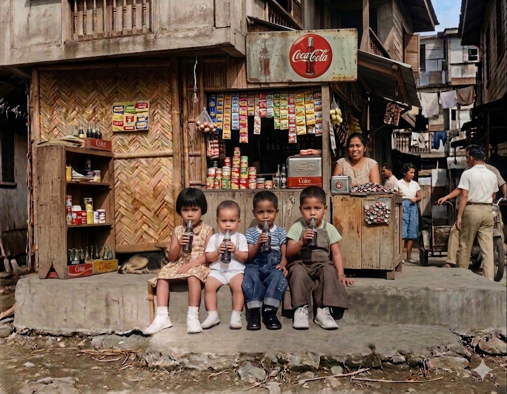

Three candidate narrative arcs for the same seed photo. Page through each storyline's beats to feel the pacing before picking one for Phase 3.

The actual seed photo (Family-album source, sanitized). Note: the on-screen live demo should crop this to 16:9 per SETUP-02 / STACK.md's 832×480 constraint — this preview shows the full frame for storyline reference.
Head-to-head (see 003c/README.md Results for full write-up):
Object Journey is the most legible for an audience that's never seen the photo before —
each beat has an obvious visual referent. This Photo, Alive best matches the Core Value
statement ("photo → living, steerable memory") but risks feeling thin on history if rushed.
Neighborhood in Motion carries the richest social context but needs the most careful
narration pacing since two beats (customers/children) are more abstract to render than a
literal sign or a literal roof.